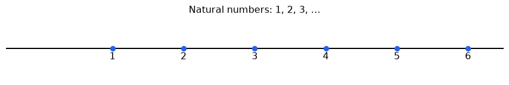
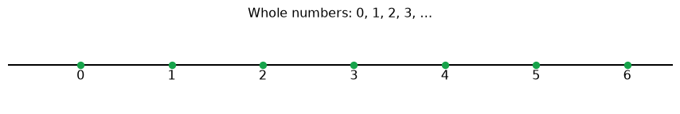
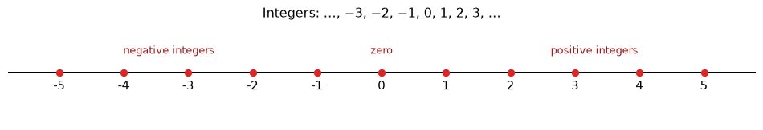
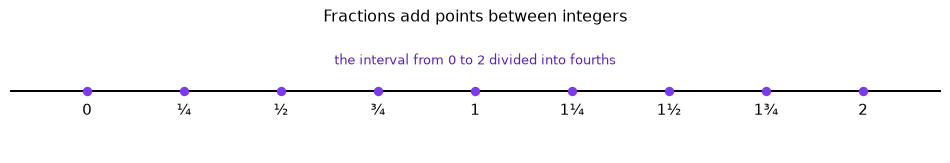
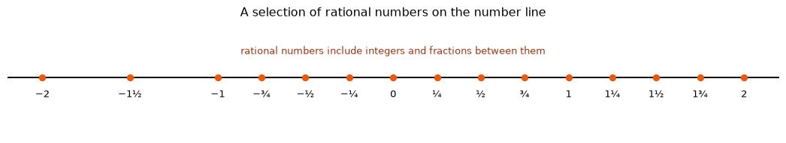
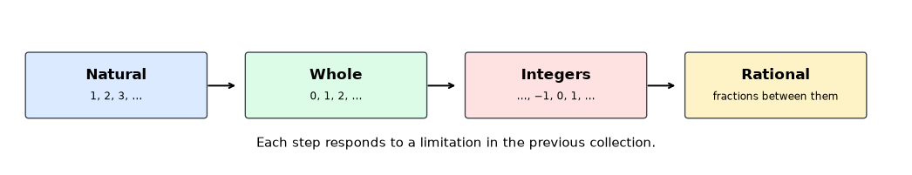

Types of Numbers
1 A conversation about numbers
Teacher: Today we will not begin by memorising a list of names. Instead, we will ask a more interesting question: Why did people need different types of numbers?
Student: I already know numbers, fractions, and decimals.
Teacher: Good. We will use what you already know. We will gradually enlarge our collection of numbers whenever an earlier collection is not enough for a new situation.
The main idea is this:
We begin with counting. Then we add zero. Then we add numbers less than zero. Finally, we allow numbers between consecutive whole numbers.
These collections are called natural numbers, whole numbers, integers, and rational numbers.
2 Starting with counting
Teacher: Imagine that I ask you to count the children in a classroom. What numbers might you say?
Student: 1, 2, 3, 4, 5, and so on.
Teacher: Exactly. These are the numbers we use when we count objects. We call them natural numbers.
In this lesson, we use the convention
\[ \mathbb{N}=\{1,2,3,4,5,\ldots\}. \]
A number such as 4 tells us that there are four objects. We can show these numbers on a number line:
Teacher: Notice something important. We are not marking every possible point on the line. We are marking only the counting numbers.
Student: So there is no natural number between 1 and 2?
Teacher: Correct. In our discussion of natural numbers, 1 and 2 are consecutive natural numbers. The natural numbers do not include numbers such as \(1\frac12\), \(\frac32\), or 1.7.
This does not mean that the points between 1 and 2 do not exist. It means only that those points are not included in the set of natural numbers.
3 Why do we need zero?
Teacher: Suppose there are five books on a table. Which number describes the collection?
Student: 5.
Teacher: What if I remove all the books?
Student: Then there are no books.
Teacher: We need a number to describe that situation. That number is zero.
Zero is useful when we need to describe an empty collection, no objects, or a starting point. When we include zero with the natural numbers, we get the whole numbers:
\[ \mathbb{W}=\{0,1,2,3,4,5,\ldots\}. \]

Student: So every natural number is a whole number, but zero is a whole number that is not natural.
Teacher: Exactly. We can write that as
\[ \mathbb{N}\subset\mathbb{W}. \]
The symbol \(\subset\) means “is contained in”. The whole-number collection contains all the natural numbers and adds zero.
4 Why do we need negative numbers?
Teacher: Now imagine that the temperature is 3 degrees above zero. We can write \(+3\), or simply 3. What if the temperature is 3 degrees below zero?
Student: We need \(-3\).
Teacher: Right. Negative numbers are useful for temperatures below zero, floors below ground level, debts, and movement in the opposite direction.
Whole numbers alone cannot describe these situations. We therefore extend the number line to the left of zero:

The integers are
\[ \mathbb{Z}=\{\ldots,-3,-2,-1,0,1,2,3,\ldots\}. \]
Teacher: What do you notice about the integers on this number line?
Student: They are still spaced one unit apart. There is no integer between 0 and 1, or between 1 and 2.
Teacher: Exactly. We have added numbers to the left of zero, but we have not yet filled the gaps between the marked points.
This is the meaning of full numbers in our discussion: integers occupy the regularly spaced marked positions. For example, 1 and 2 are consecutive integers. Numbers such as \(\frac32\), 1.5, and 1.9 are not integers.
We can now see the nesting:
\[ \mathbb{N}\subset\mathbb{W}\subset\mathbb{Z}. \]
Every natural number is whole, and every whole number is an integer.
5 A possible confusion
Student: But fractions and decimals are also on the number line. If \(\frac12\) is on the number line, is it a natural number or an integer?
Teacher: Being on the number line is not enough to tell us which set a number belongs to. The number line can represent many different sets. We must ask whether the particular number is included in the set we are discussing.
For instance:
- \(2\) is a natural number, whole number, and integer.
- \(0\) is a whole number and integer, but not a natural number under our convention.
- \(-2\) is an integer, but not a whole number or natural number.
- \(\frac12\) is not a natural number, whole number, or integer.
The number line is like a map. A map may show many roads, but a particular journey may use only some of them. Similarly, a number line may show many possible locations, while a number set includes only selected locations.
6 Why do we need fractions?
Teacher: Suppose two children share one apple equally. Can each child receive a whole number of apples?
Student: No. Each child gets half an apple.
Teacher: So we need a number between 0 and 1. That number is \(\frac12\).
Now suppose we want to describe one and a half metres, or \(2\frac14\) litres. Integers are not enough because they leave gaps between consecutive integers. Fractions allow us to describe points in those gaps.

Student: Between 1 and 2, I can place \(\frac54\), \(\frac32\), and \(\frac74\).
Teacher: Yes. We have divided the unit interval into equal parts. If we divide it into four equal parts, the points are \(1\frac14\), \(1\frac12\), and \(1\frac34\) between 1 and 2.
7 Rational numbers
A rational number is a number that can be written in the form
\[ \frac{p}{q}, \]
where \(p\) and \(q\) are integers and \(q\neq0\).
Examples include
\[ \frac12,\quad -\frac34,\quad 5=\frac51,\quad 0=\frac01, \]
and terminating or repeating decimals such as
\[ 0.5=\frac12,\qquad 1.25=\frac54,\qquad 0.333\ldots=\frac13. \]
Student: So whole numbers and integers are also rational numbers because they can be written over 1.
Teacher: Exactly. For example, \(-3=-\frac31\) and \(7=\frac71\). Therefore,
\[ \mathbb{N}\subset\mathbb{W}\subset\mathbb{Z}\subset\mathbb{Q}, \]
where \(\mathbb{Q}\) represents the rational numbers.
The rational numbers include the integers and also many numbers between them:

There are still infinitely many rational numbers between any two different integers. Between 0 and 1, for example, we can find \(\frac12\), \(\frac13\), \(\frac14\), \(\frac{99}{100}\), and many more.
8 What about decimals?
Student: Are decimals different from fractions?
Teacher: Some decimals are another way of writing fractions. A decimal tells us how a unit has been divided into tenths, hundredths, thousandths, and so on.
For example,
\[ 0.4=\frac4{10}=\frac25, \qquad 1.25=\frac{125}{100}=\frac54. \]
A terminating decimal is rational. A repeating decimal is also rational:
\[ 0.666\ldots=\frac23. \]
However, not every decimal is rational. Some decimals continue forever without repeating a pattern, such as the decimal representation of \(\sqrt2\). That idea belongs to a later discussion of irrational numbers. For now, the important point is that fractions and many familiar decimals add points between the integers.
9 The complete chain
We can now tell the story in one line:

The inclusions are
\[ \boxed{\mathbb{N}\subset\mathbb{W}\subset\mathbb{Z}\subset\mathbb{Q}}. \]
The thinking behind the chain is more important than memorising the symbols:
- Natural numbers: We need numbers for counting.
- Whole numbers: We need zero to describe none or an empty collection.
- Integers: We need negative numbers for quantities below zero or in the opposite direction.
- Rational numbers: We need fractions and suitable decimals to describe parts of a whole and points between integers.
10 Check your understanding
10.1 Question 1
Is 0 a natural number?
Think aloud: In this lesson, natural numbers begin at 1. Zero was added to create the whole numbers. Therefore, 0 is a whole number, but not a natural number under our chosen convention.
10.2 Question 2
Is \(-4\) a whole number?
Think aloud: Whole numbers begin at 0 and move to the right: \(0,1,2,3,\ldots\). Since \(-4\) lies to the left of zero, it is not a whole number. It is an integer.
10.3 Question 3
Is \(\frac32\) an integer?
Think aloud: \(\frac32=1.5\), which lies between 1 and 2. There is no integer between 1 and 2. Therefore, \(\frac32\) is rational but not an integer.
10.4 Question 4
Is 6 rational?
Think aloud: Any integer can be written with denominator 1. Since \(6=\frac61\), 6 is rational.
10.5 Question 5
Which sets contain \(-2\)?
Think aloud: \(-2\) is not natural or whole because those sets do not include negative numbers. It is an integer, and it is rational because \(-2=-\frac21\).
11 A final conversation
Student: I think I understand now. The different names are not saying that the number line changes. They tell us which points we have decided to include.
Teacher: Exactly. We begin with a small collection and enlarge it when we need new kinds of numbers. Natural numbers are enough for counting. Whole numbers add zero. Integers add negative numbers. Rational numbers add fractions and many decimals between the integers.
Student: And a number can belong to more than one collection.
Teacher: Yes. For example, 3 is natural, whole, integer, and rational. But \(\frac12\) is rational without being natural, whole, or integer.
The most useful picture is therefore not a collection of unrelated definitions, but a sequence of questions:
What can I describe with the numbers I have? What new situation forces me to add another kind of number?
That question turns number classification into a story of mathematical need.